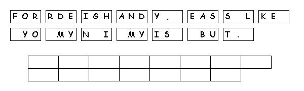

This week's lessons: Genesis 24:34-38, 42-49, 58-67 and [Psalm 45:10-17 or Song of Solomon 2:8-13] or, Zechariah 9:9-12 and Psalm 145:8-14, Romans 7:15-25a, Matthew 11:16-19, 25-30
Middle-School Pew-work
Is it good or bad to be “wise and intelligent?” Should we be “foolish and stupid” instead?________ ________________________________________________________________________________________________________________________________________________________________________________________________________________________________________________________________________________________________________________________
Who are some people you know for whom being “wise and intelligent” keeps them from knowing God? _________________________________________________________________________ __________________________________________________________________________________________________________________________________________________________________________________________________________________________________________
What kind of a relationship is Jesus, in these verses, calling us to have with him?_____________ ________________________________________________________________________________________________________________________________________________________________________________________________________________________________________________________________________________________________________________________

Next week: Genesis 25:19-34 and Psalm 119:105-112 or Isaiah 55:10-13 and Psalm 65:(1-8), 9-13, Romans 8:1-11, Matthew 13:1-9, 18-23